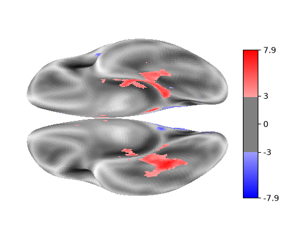
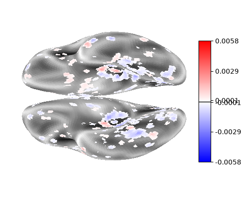

Putting it together: General Linear Models for Decoding#
In this next example, we will re-use the code from the previous example to generate statistical maps for each visual category, one per run.
We now have our statistical maps for each run in the summary_stats list.
We also have the visual category type in the conditions_label list,
and the run information in the run_label list.
Using all of these, we can perform a Support Vector Classifier (SVC) analysis using the Decoder object in Nilearn.
from sklearn.model_selection import LeaveOneGroupOut
from nilearn.decoding import Decoder
decoder = Decoder(
estimator="svc",
mask=haxby_dataset.mask,
standardize=False,
screening_percentile=5,
cv=LeaveOneGroupOut(),
)
decoder.fit([stats["z_score"] for stats in summary_stats], conditions_label, groups=run_label)
# Return the corresponding mean prediction accuracy compared to chance
# for classifying one-vs-all items.
classification_accuracy = np.mean(list(decoder.cv_scores_.values()))
chance_level = 1.0 / len(np.unique(conditions))
print(
f"Classification accuracy: {classification_accuracy:.4f} / "
f"Chance level: {chance_level}"
)
Classification accuracy: 0.7530 / Chance level: 0.125
Working in a predictive framework provides us with different information than in a statistical learning framework, because we focus on the generalizability of our findings (across runs, in this case).
Note
Generally, statistical learning focuses on identifying the relationship between variables (like BOLD activity and experimental conditions) within a dataset, while machine learning focuses on learning relationships that generalize across contexts.
A caveat : Interpreting decoder weight maps#
Now we have a sense of how our decoder performs relative to chance. But what if we want to know what features it’s using to achieve its performance ?
One common strategy when working with a GLM is to look at the resulting statistical maps to understand which voxels have a relationship with our contrast of interest.
Let’s assume that we want to use the same strategy here.
First, we will run a fixed-effects analysis on our z_maps, using all run-level z_maps for a given experimental condition.
This will show which voxels are most involved in the fixed effects statistical map for a given experimental condition, Faces.
from itertools import compress
condition_mask = [condition_label == 'face' for condition_label in conditions_label]
face_summary_stats = list(compress(summary_stats, condition_mask))
from nilearn.glm.contrasts import compute_fixed_effects
contrast_imgs = [stats["effect_size"] for stats in face_summary_stats]
variance_imgs = [stats["effect_variance"] for stats in face_summary_stats]
fixed_fx_contrast, fixed_fx_variance, fixed_fx_stat, _ = compute_fixed_effects(
contrast_imgs, variance_imgs, haxby_dataset.mask
)
Now we project the computed fixed-effect map to an FreeSurfer fsaverage5 surface for plotting.
from nilearn.surface import SurfaceImage
from nilearn.plotting import plot_surf_stat_map, show
from nilearn.datasets import load_fsaverage, load_fsaverage_data
fsaverage5 = load_fsaverage()
fsaverage_data = load_fsaverage_data(data_type="sulcal")
surface_ffx = SurfaceImage.from_volume(
mesh=fsaverage5["pial"],
volume_img=fixed_fx_stat,
)
plot_surf_stat_map(
surf_mesh=fsaverage5["inflated"],
stat_map=surface_ffx,
bg_map=fsaverage_data,
hemi="both",
view="ventral",
threshold=3.0,
cmap="bwr",
)
show()

OK, now that we have this map as a baseline, let’s do the same plotting projection for the weight map for the “Face” condition.
We can see that the decoder object has a fitted coef_img_ attribute for each experimental condition:
decoder.coef_img_
{'bottle': <nibabel.nifti1.Nifti1Image at 0x14a7624e0>,
'cat': <nibabel.nifti1.Nifti1Image at 0x14f16c710>,
'chair': <nibabel.nifti1.Nifti1Image at 0x14a7c6990>,
'face': <nibabel.nifti1.Nifti1Image at 0x14f1759d0>,
'house': <nibabel.nifti1.Nifti1Image at 0x14f17c320>,
'scissors': <nibabel.nifti1.Nifti1Image at 0x14f17eff0>,
'scrambledpix': <nibabel.nifti1.Nifti1Image at 0x14f17c380>,
'shoe': <nibabel.nifti1.Nifti1Image at 0x14a7e8980>}
So we access and plot it just as above:
surface_coef = SurfaceImage.from_volume(
mesh=fsaverage5["pial"],
volume_img=decoder.coef_img_['face'],
)
plot_surf_stat_map(
surf_mesh=fsaverage5["inflated"],
stat_map=surface_coef,
bg_map=fsaverage_data,
hemi="both",
view="ventral",
threshold=0.0001,
cmap="bwr",
)
show()

This map looks somewhat similar, but involves voxels from many other regions of the brain than just the Fusiform Face Area (FFA)!
How important are each of these individual voxels to our overall prediction performance ?
Unfortunately, it’s hard to know just from these maps, as weight maps can be challenging to interpret directly [1].
Instead, we will want to use Feature Importance methods to evaluate how important a given voxel (or feature) is in making a prediction.
Feature importance is outside of the scope of this tutorial, but the library highdimstat (https://hidimstat.github.io) focuses on exactly this problem, and it has a worked example using exactly this dataset !
- 1
John-Dylan Haynes. A primer on pattern-based approaches to fmri: principles, pitfalls, and perspectives. Neuron, 87(2):257–270, 2015. URL: https://www.sciencedirect.com/science/article/pii/S0896627315004328, doi:https://doi.org/10.1016/j.neuron.2015.05.025.